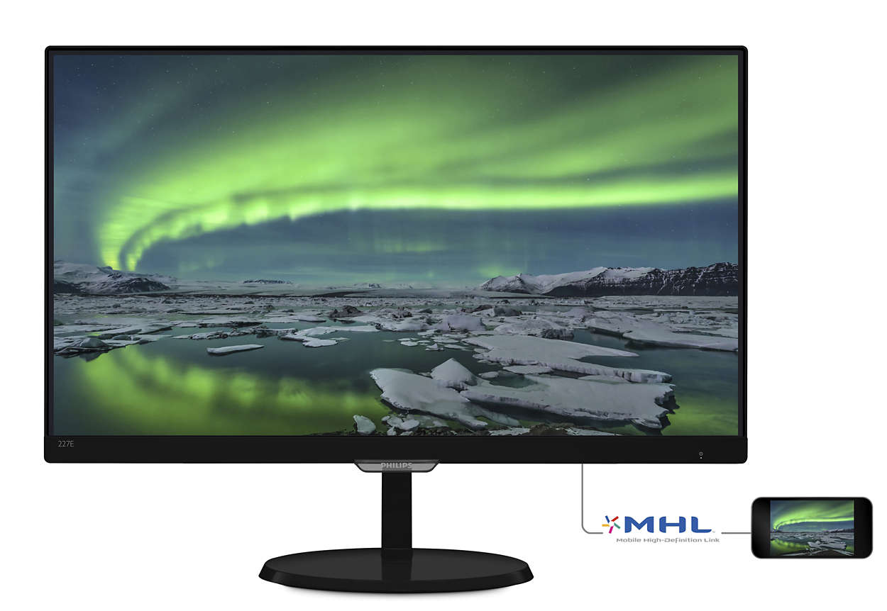
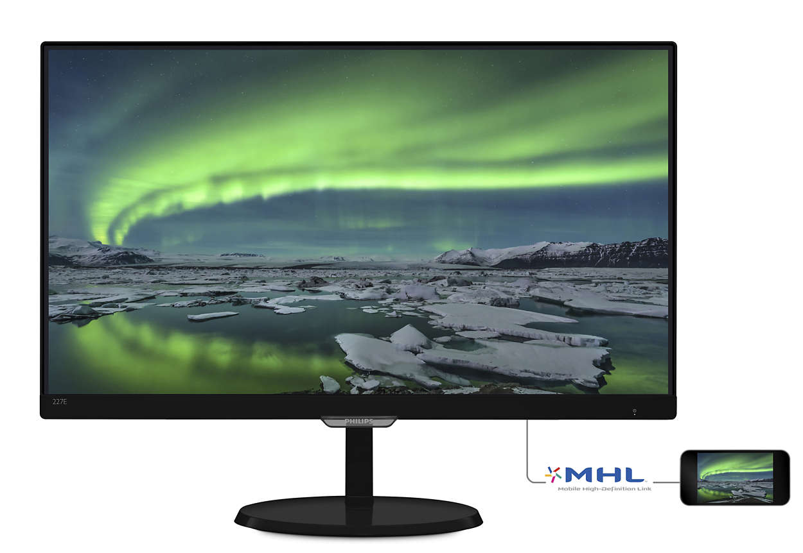

LCD Monitors
LCD Monitor Information
 
A LCD, or Lquid Crystal Display sounds pretty cool and is pretty cool, probaly has the best picture of the three. There is a picture example on the left to see how it is put together. These types of monitors can get up to 4k
video/picture quality, which, in my opinion, look better than life, and is used in most tech we have today such as, smartphones, tvs, and laptops.The LCD is made of two sheets of a flexible polarizing material and a layer of liquid crystal
solution between the two.An LCD does not refresh like a CRT monitor. Instead, a picture is created by sending electricity through liquid crystals which untwist at the rate of electricity applied, creating 64 shades.